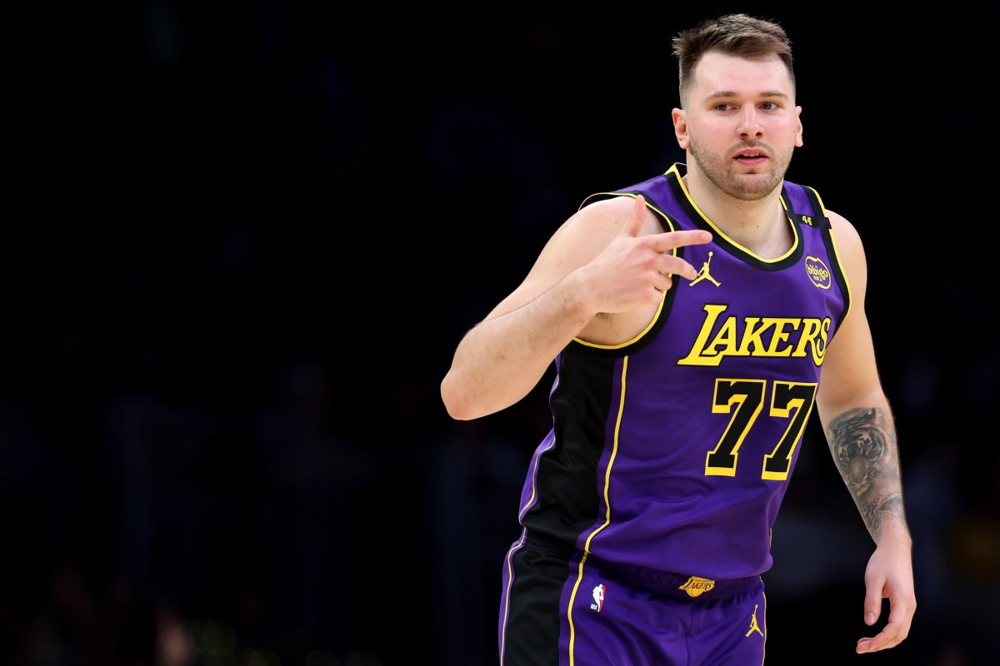

3 de febrero de 2025 • 15:54 • ⏱ 7 minutos de lectura

Luka Dončić posando con la camiseta de Los Angeles Lakers tras el histórico traspaso.
“Se trata del movimiento más impactante de la historia de la NBA”. La frase se repite en cada análisis de los medios estadounidenses y todavía nadie sale del asombro. Tiene cierta lógica, porque era imposible imaginar que una organización de la liga más poderosa del mundo del básquetbol, que lucha por conseguir estrellas que les permitan vender camisetas y postularse como candidatos a conquista un anillo, pudiera desprenderse de una joya en medio de una temporada. Pero Kevin Durant, la figura de Phoenix Suns, realizó la lectura justa, al mencionar que en la NBA no hay comunión entre la lealtad a un equipo y el negocio, lo que echa luz a la situación de Luka Dončić, que a sus 25 años y uno de los mejores jugadores del mundo, terminara eyectado por Dallas Mavericks hacia Los Angeles Lakers sin que a nadie en Texas le temblara el pulso. Y todo entre las sombras, ya que los protagonistas, los jugadores (Dončić y Anthony Davis, como principales implicados), no estaban enterados de lo que se estaba cocinando.
Está claro que Dallas ya no quería al esloveno, que fue siempre la figura de su equipo y volvió a poner a la franquicia en el mapa de candidatos a la corona de la NBA. Además, fue señalado como estrella del calibre de LeBron James, ni más ni menos que uno de los mejores que pisaron la competencia. Porque fueron los Mavericks los que le ofrecieron a Dončić, de 25 años, y a cambio solicitaron al talentoso pivote Anthony Davis, de 32. Para más información sobre el equipo, visita la página de Wikipedia de los Dallas Mavericks.